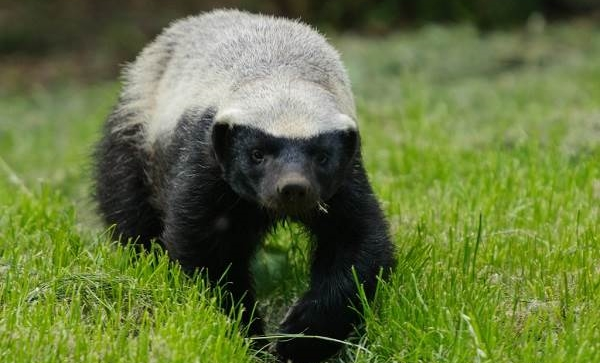
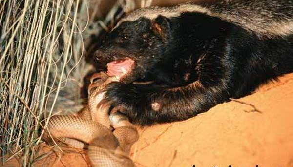

Середовище існування та спосіб життя медоїда
Зустріти медоеда в дикій природі можна по всій території Африки, а також в Азії. Ці тварини можуть жити як у лісових та степових зонах, так і високо в горах. Абсолютна невибагливість допомагає легко виживати даного виду.
Спосіб життя веде нічний хижак. Хоча в місцях, де немає можливості зустріти людину, медоїд може полювати і відпочивати цілий день. Воліють ці тварини прохолодну погоду. Дуже часто медоїд виявляється злодієм! Якщо хижак приб’ється до фермі, то буде постійно красти птицю. М’ясо курки – улюблене ласощі звіра.
Зазвичай в місцях їх проживання вся земля прорита норами. Певного місця для ночівлі цей звір не має. Нора, яку він буде рити цілий день, і стане притулком. Живе борсук медоїд в самоті і вкрай рідко можна зустріти групу з 5-7 тварин.
Зазвичай до неї входить молодняк або особи чоловічої статі. Найчастіше медоїд полює на землі, але якщо він бачить мед, то готовий лізти на дерево будь-якої висоти. Медоїд – це тварина, яка мітить свою територію.
Характер медоїда
Ця тварина має лютою вдачею. У дикій природі до себе не підпускає ні людини, ні інших тварин. Якщо медоїд відчуває хоч найменшу небезпеку, він подібно скунсу починає виділяти залозами смердючий запах, але при цьому не тікає
У його випадку найкращий захист – це напад. Потужні щелепи і довгі гострі кігті розривають суперника на шматки! Медоїд може вийти на бій навіть проти львів!
Він не боїться і отруйних змій. Медоїд часто виступає проти них. Володію дуже товстою шкірою, укус змії йому не страшний. У медоеда дивна реакція на зміїну отруту. Перші 5 хвилин після укусу тварина б’ється в передсмертних конвульсіях, а після оживає і встає.
Харчування, розмноження та тривалість життя медоїда
Як такого раціону у медоеда немає. Він абсолютно не примхливий до вибору їжі. Основний раціон складають:
- Змії;
- Дрібні ссавці;
- Коники, жаби;
- Скорпіони;
- Риба.
Тварина як справжній хижак зовсім не любить вуглеводну їжу. Рідко можна зустріти медоеда, який їсть фрукти або овочі. Перевагу медоеда впала на солодкі ягоди. На диво, цей представник сімейства куницевих, може трапезувати навіть падаллю, що зовсім не властиво його родичам! Змій і скорпіонів медоїд всіх без розбору, так як укуси і отрута йому не страшні.
Цікаві факти про медоїда
- У Книзі рекордів Гіннесса медоїди багаторазово згадувалися, як самі безстрашні ссавці на Землі. І дійсно, вони, здається, не бояться взагалі нічого, хоча інстинкт самозбереження у них, безсумнівно, присутній. Природних ворогів у них майже немає, тому що вони сильні і спритні, а їх товсту шкіру зазвичай не можуть прокусити ні отруйні змії, ні навіть великі кішки. Її навіть зброя, на зразок мачете, копій і лука зі стрілами, зазвичай не бере! І навіть великі хижаки, що в десяток-другий раз перевершують медоїда розмірами, зазвичай вважають за краще не зв’язуватися з ним. Це частково ріднить цього звіра з іншим представником сімейства куницевих, росомахою, яка відрізняється схожою поведінкою.
- Зовні чорно-біле забарвлення медоїдів нагадує таке у скунсів. Ця схожість, напевно, не випадкова, тому що в разі агресії ці тварини, як і скунси, можуть випускати моторошно смердючий запах. Цю зброю вони використовують в якості оборонної, і на полюванні до неї зазвичай не вдаються.
- Як і споріднені з ними борсуки, медоїди їдять практично все, але вони все-таки є активними хижаками. Незважаючи на назву, мед становить лише незначну частину їх раціону. Ці тварини вважають за краще з’їсти м’ясо, причому вони часто полюють на здобич, що в кілька разів перевершує їх розмірами, включаючи інших хижаків.
- Медоїди все життя проводять на поверхні землі, але в разі необхідності вони можуть лазити по деревах. Така необхідність у них зазвичай назріває в разі виявлення вулика диких бджіл, в якому можна добути трохи меду. У таких випадках бажання поласувати у них перемагає лінь, і вони лізуть на дерево. До того ж, бджоли практично не можуть заподіяти їм ніякої шкоди, єдиними вразливими для їх укусів місцями на тілі медоїда є очі і ніс.
- Ніхто досі не знає, скільки в середньому живуть медоїди, оскільки в дикій природі за ними спостерігати складно, а в неволі їх практично не утримують. Офіційно зареєстрований рекорд довгожительства серед них становить 26 років.
- Унікальний організм медоїдів дуже незвичайним чином реагує на зміїну отруту. Якщо змії все-таки вдасться прокусити його шкіру і впорснути отруту, медоїд поводиться так, ніби вмирає – падає, смикається в агонії і врешті-решт затихає. Але через півгодини-годину він починає знову подавати ознаки життя, а ще через годину-півтори вже відчуває себе, судячи з усього, абсолютно нормально. Чим це обумовлено – загадка.